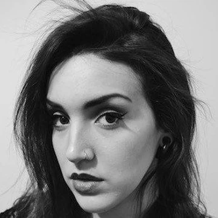
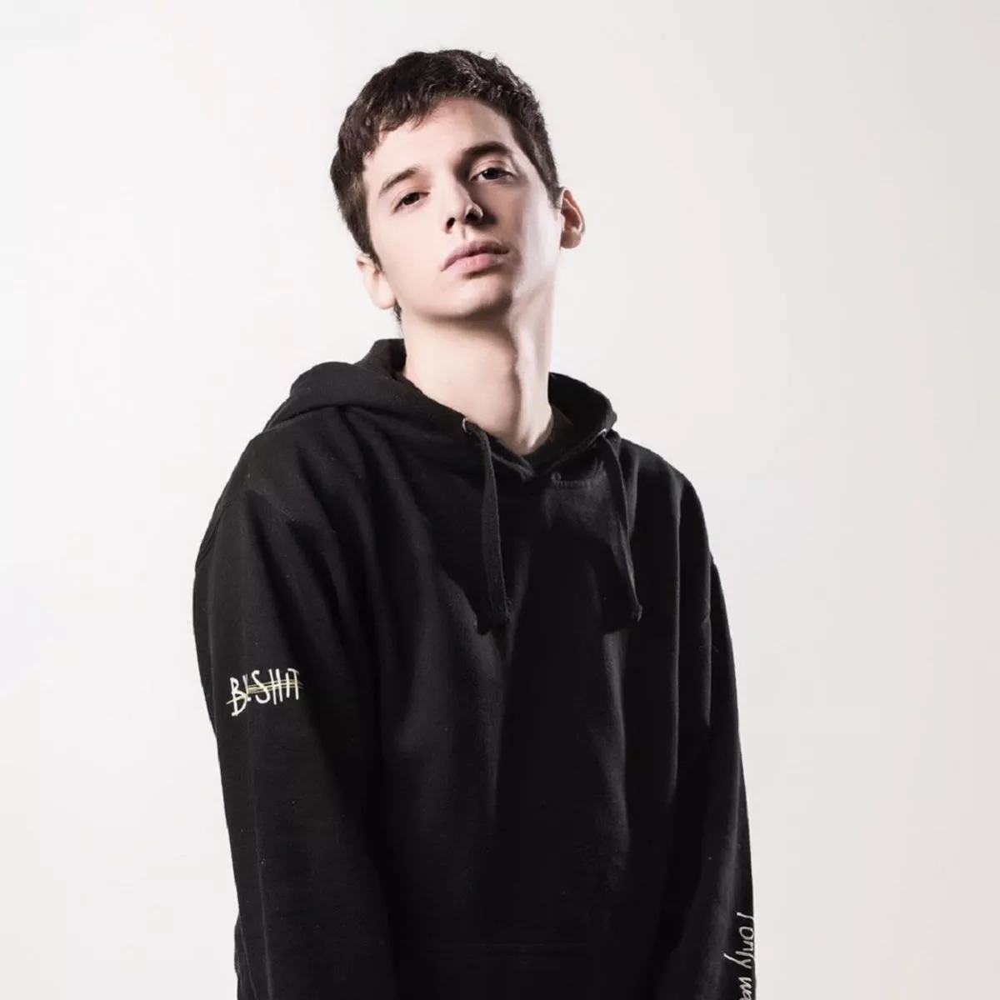

HACE CLICK AQUÍ PARA ACCEDER AL VIDEO MÁS VISTO DE BNT
¿Qué era Bajo Ningún término?
Bajo Ningún Término fue un canal formado en 2012 por Pablo Agustín y Bárbara Martínez. En este canal se puede encontrar sketches, covers, challenges y colaboraciones con otros YouTubers
de la talla de Mica Suarez, Alejo Igoa, Hecatombe Producciones, Daiana Hernández en Argentina, o con Juan Pablo Jaramillo y Juana Martinez en otros países.


Barbara Martinez ⠀⠀⠀⠀⠀⠀⠀⠀⠀⠀⠀⠀⠀⠀⠀⠀⠀⠀⠀⠀⠀⠀⠀⠀⠀⠀⠀⠀⠀Pablo Agustín
Pablo Agustín
Pablo Agustín (nacido el 15 de Marzo, 1990, en Buenos Aires) es un YouTuber Argentino. Es conocido por hacer vídeos en su canal Pablo Agustín y por haber empezado a subir videos
en su canal compartido, ''Bajo Ningún Término''.
Pablo creó junto a Barbara Martinez un canal llamado "BajoNingúnTermino"
el 26 de Febrero del 2012, y subieron su primer vídeo el mismo día titulado 'Primera cita 5 cosas que no se hacen'
(sin contar los vídeos subidos previamente en su canal personal) .
Al paso de haber subido numerosos sketchs de comedia y algunos retos/challenges junto a Barbara, subieron un video titulado 'Homofobia en Buenos Aires'
el cual es un experimento social que ganó
popularidad en Internet y que brindó reconocimiento a Pablo y al canal.
Algunos de sus personajes secundarios (o alter egos) son:
Primo Vikingo: Es una parodia de la youtuber Prima Vikinga, sale en varios videos relacionado a la moda y maquillaje, Junto a Barbara, con la excusa de que
pablo se fue a hacer otras cosas.
"Marcos":
Es un personaje que aparece en varios videos, junto a Jésica (interpretada por Barbara Martinez), hacen de amigos, novios o esposos.
Uno de sus mejores videos son ''Cocinando con Amor'', en los cuales sale con Barbara a cocinar para el público y siempre se mandan una cagada.
María Antonieta de las Nieves: Es un personaje que aparece en 3 videos relacionados con su hijo, Maxi. Es una parodia a Mirtha Legrand y otras divas
de la televisión Argentina. Siempre se destaca por ser muy políticamente incorrecta y muy quilombera. Aparece en los videos de ''Los Youtubers Son Unos
Pelotuditos'',
''Especial Navidad 2017'' y ''Mi Hijo Se La Come'' junto a el personaje de conductora estilo Viviana Canosa (interpretada por Barbara Martinez).
Maxi: Es el hijo de María, antes mencionado. Es abiertamente gay y youtuber, no se le vio en ningún video pero si le menciona en los 3 videos anteriormente
mencionados.
Bárbara Martinez:
Bárbara Martínez (nacida el 30 de marzo de 1991) es una youtuber Argentina que antes (entre 2015 y 2018) tenía un canal llamado Bárbara Martínez,
dónde subía covers. Y otro que se llama "Mentalmess" dónde subía humor,
gameplay's y algún que otro sketch. Ella cuenta con un talento inmenso, el cual debería tener muchísimo más reconocimiento. Lamentablemente no se encuentra
mucha más información de ella. Actualmente es música y saca sus propias canciones.
Homosexualidad
Este tema se trato en varios de sus videos como en los de "Preguntas homosexuales pt 1 y 2", video donde respondian preguntas de sus
fans (y varios homofobicos) acerca de la homosexualidad.
Pablo individualmente subio 2 videos hablando de su historia personal, de su experiencia y de la discriminacion que sufrió. También hicieron videos
parodia, imitando y burlandose de los Homofobicos y otros videos humoristicos que tratan este tema como Terapia Homosexual.
Ambos han declarado en sus videos ser homosexuales, y desde su lugar en YouTube han dado su mas grande apoyo a la comunidad LGBTQIA+ dando mensajes q
ue, de hecho, su video más visto trata a la homofobia como tema central, "Homofobia en Buenos Aires" que cuenta con mas de 5 Millones de reproducciones.
Actualmente el canal se encuentra inactivo, ya no suben mas vídeos debido a que, como consecuencia de un conflicto entre sus dos integrantes en febrero
de 2018, se separaron y decidieron dejar el canal de lado.
Su último vídeo oficial fue: Mi hijo es gay, subido el 27 de enero del 2018. Este conflicto llevó a una discusión y terminaron separandose, para saber más haz
click en el menú superior de la página en la sección "¿Por qué se separaron?"